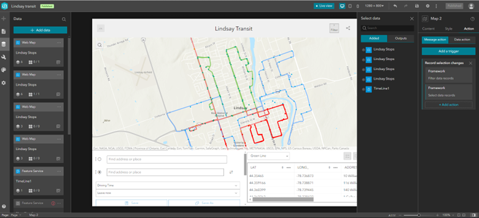
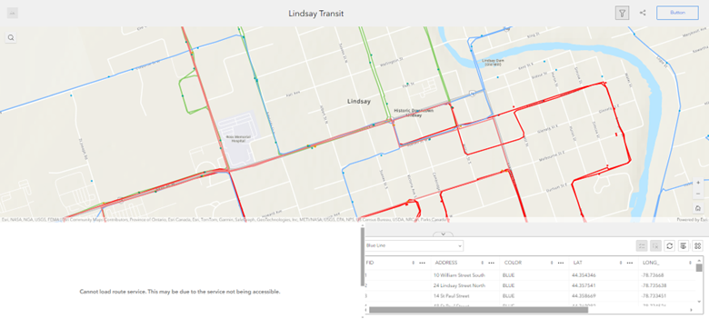

Create an experience builder using the ArcGIS online component from the menu button. Click the Experience Builder app.

Create a new Experience using the "Create New" button on the top righthand side.

There will be many templates presented to you. Choose wisely for the application of your interest. In our case, we are creating a Transit application for Lindsay, so this application should be Map centric.
Click on the map in the center of the screen, then add data from the "Select map" tab on the righthand side. This enables users to add data from either ArcGIS Online or a local database.

After adding the data, you will see the stops and routes of the Lindsay transit in the application. This routes features are what we created from the GTFS and Ontario GeoHub transit data.

NOTE: Don't use the routing widget from the Experience builder as this requires credits and request per head. This is a useless function on this point.
This causes a error at the final product this is the screen shot of that which we coundn't make that work.
In the editing interface of the Experience Builder, click the page icon on the upper lefthand side of the sidebar. Click Window to switch to viewing all the windows within the experience. Click the + icon on the window to add a window.
Scroll down and choose your layout of choice of this window. I chose the Simple version.
Add an image and text. On our splash page, we wanted to include an image of the routes and also text indicating what the purpose of the experience is. Since this experience was for exploration purposes and the data needs some fine tuning, we added a disclaimer at the bottom. User must accept the terms and conditions in order to view the experience.
On the righthand side, customize how the user sees and interacts with the splash page.
| Advantages | Disadvantages |
|---|---|
| Many templates to choose from | Can be time consuming to create |
| Tied to AGOL organization account | Moving items around the page can be finicky |
| Can customize the theme/look | Cannot easily move the published experiences between accounts |
| No coding involved | |
| It will automatically update for different screen sizes | |
| Can integrate with other apps, like Dashboards and Surveys | |
| Can add triggers that activate depending on how the user interacts with the experience |